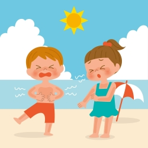

-
Qualidade de vida para as crianças
1- Alimentação
- Uma boa alimentação é muito importante para as crianças, pois fornece os nutrientes necessários para o crescimento, desenvolvimento adequado, fortalecimento do sistema imunológico e bom funcionamento do organismo. Além disso, uma dieta equilibrada contribui para a saúde física e mental, melhora o desempenho escolar e previne doenças futuras.
- Para ter uma boa qualidade de alimentação faça: no mínimo, cinco refeições ao dia (café da manhã, lanche, almoço, lanche e jantar); coma
frutas, legumes e verduras variados diariamente; evite refrigerantes e salgadinhos; beba pelo menos dois
litros (6 a 8 copos) de água por dia; faça as refeições em ambiente calmo e nunca assistindo televisão;
evite comer em excesso quando estiver nervoso ou ansioso.
A importância do exercício físico na infância.
- Promove o desenvolvimento físico, incluindo o fortalecimento dos músculos e ossos.
-
- Ajuda a manter um peso saudável e prevenir a obesidade.
- Melhora a coordenação motora e habilidades motoras.
-
- Estimula o desenvolvimento cognitivo e melhora o desempenho acadêmico
- Fortalece o sistema imunológico e reduz o risco de doenças.
- Promove a socialização e desenvolvimento de habilidades sociais.
- Melhora a saúde mental, reduzindo o estresse e melhorando o humor.
- Estabelece hábitos saudáveis que podem ser mantidos ao longo da vida.
- O exercício físico na infância é importante para promover o
desenvolvimento físico, mental e social, além de ajudar a prevenir doenças, melhorar a coordenação motora e
estimular o crescimento saudável.
Existem Jogos e brincadeiras que promovem o movimento e a atividade física, como:
Amarelinha
Dançar
Futebol
O efeito do sol na pele das crianças
A exposição excessiva ao sol pode causar danos à pele das crianças, como queimaduras solares, envelhecimento precoce e aumento do risco de desenvolver câncer de pele no futuro. É importante proteger a pele das crianças com protetor solar, roupas adequadas e evitar a exposição direta ao sol durante os horários de pico.
A exposição ao sol pode causar danos à pele das crianças, como queimaduras solares, envelhecimento precoce e aumento do risco de desenvolver câncer de pele no futuro. É importante proteger a pele das crianças com protetor solar, roupas adequadas e evitar a exposição direta ao sol durante os horários de pico.

Para que sua criança tenha um cuidado maior com a esposição ao sol, temos algumas medidas de proteção
- Uso adequado do protetor solar
- Aplicar protetor solar com fator de proteção solar (FPS) adequado para crianças.
- Vestir roupas de manga longa e calças compridas.
- Usar chapéus de aba larga para proteger o rosto e pescoço.
- Evitar a exposição direta ao sol durante os horários de pico (10h às 16h).
- Procurar áreas de sombra ou utilizar guarda-sóis.
- Usar óculos de sol com proteção UV.